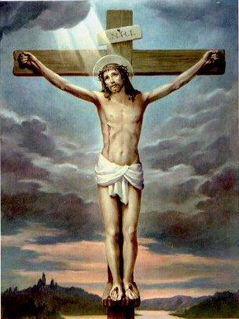
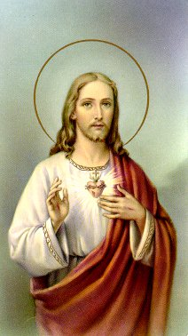
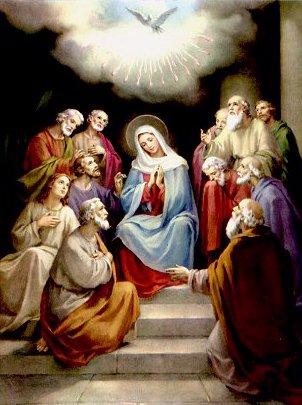

CRIAÇÃO
E SALVAÇÃO
DEUS criou tudo o que existe, o
universo com os astros, o Céu, a Terra, os animais, as aves e toda humanidade,
dando as pessoas, virtudes, graças e o "livre arbítrio",
ou seja, a plena 
liberdade de movimentos, ações e pensamentos,
a fim de que cada um vivendo intensamente, exercitasse o discernimento
e procurasse trilhar a vereda do bem, fosse um verdadeiro Filho de
DEUS. E porque ELE procedeu assim? DEUS fez tudo isso, porque é Bom.
ELE não precisa de nada para completar a sua felicidade. ELE é feliz.
Sua felicidade é eterna. Assim sendo, tudo aconteceu normalmente,
numa manifestação espontânea de seu infinito Amor, que se compraz
em dividir os seus bens, o esplendor do Paraiso Divino, com a sua
criação, com todos os seus filhos, agindo como um verdadeiro PAI
que ELE é.
Pecado Original:
O CRIADOR por ser DEUS,
é Onisciente, ELE conhece o presente, o passado e o futuro e por isso,
sabia que a humanidade não seria totalmente fiel ao Amor Divino.
Mesmo assim, criou os nossos primeiros pais, Adão e Eva, e
colocou-os no Eden, no paraíso terrestre, e deu-lhes um mandamento:
"Podem comer os frutos das árvores
do jardim. Mas da árvore da ciência do bem e do mal não comerão,
porque no dia em que dela comeres, morrerão."
(Gn 2,16-17)
Entretanto, apesar de dotados com
especiais prerrogativas, nossos primeiros pais traíram o Amor Divino no
primeiro teste de fidelidade, desobedeceram ao SENHOR, relegaram
as palavras Divinas a um plano inferior e acolheram a insinuação
tentadora do Anjo das Trevas, quebrando a harmonia que existia
entre as criaturas e o CRIADOR, cometendo um Pecado de
Desobediência, que foi o Primeiro Pecado, também chamado,
Pecado Original (Gn 3,1-24).
Não é difícil entender que a transgressão
foi formal e positiva, porque consumada conscientemente contra o
Amor do PAI ETERNO, por criaturas que possuíam uma quantidade
exuberante de graças e viviam em plena comunhão com ELE. Como
DEUS é eterno, princípio e fim de todas as coisas, a ofensa cometida
contra ELE, tem reflexos e consequências infinitas e por conseguinte,
atingiu a humanidade de todas as gerações, como uma nódoa indesejável
e perniciosa, que atuando sobre a criação, neutralizou os dons especiais
contidos na "Graça Inicial"
. Significa dizer, que cada pessoa ao nascer recebe
a "Graça Inicial"
, mas sem os
"dons especiais", que foram substituídos pela
"mancha hereditária do Primeiro
Pecado", que se revelou avassaladora e
"abriu as portas"
a todos os demais pecados. Como o ser humano é finito, tem suas ações
limitadas. As criaturas não tem meios de praticar uma boa ação que tenha
alcance infinito para consolar o Coração do CRIADOR, por causa
daquele Primeiro Pecado e dos Pecados Subsequentes. Dessa forma,
é impossível a humanidade conseguir a salvação com os seus próprios
recursos pessoais. Por isso mesmo, todas as gerações que se seguiram
até a chegada do Redentor, as pessoas que não tinham "pecado mortal",
que eram dignas e responsáveis, que exercitavam a justiça e o amor
fraterno, quando morreram sua alma não subiu ao Céu, por causa do
Pecado Original e dos outros pecados cometidos, mas permaneceram
em "purificação" esperando a chegada do Messias Redentor. A Igreja considerava
que aquelas almas fossem para um local, denominado "Limbo", uma espécie de ante-sala do Paraíso Divino, onde
permaneceram até a chegada do SENHOR Salvador e Redentor de toda
humanidade. Com a "Graça
Redentora de JESUS" todas as almas que lá
esperavam, foram para o Céu.
Para que seja entendido com mais
clareza a realidade da transmissão do Pecado Original à todas as gerações,
faz-se mister lembrar que DEUS é Onisciente e portanto, diante DELE
"tudo está presente"
. Assim sendo, ELE conhece todas as ocorrências
e suas consequências, vê o desenvolvimento e o interior da história.
Isto significa dizer, que também naquele momento sinistro, quando
aconteceu o Primeiro Pecado, todas as gerações, inclusive a nossa
e aquelas que irão nascer, estávamos espiritualmente presentes no Coração
do CRIADOR. Então todos nós fomos atingidos pelo efeito da "Primeira Ofensa",
quero dizer que em face do acontecido, a natureza humana perdeu na Origem ,
os dons Especiais da Graça Santificante Inicial que mantinham as criaturas
unidas a DEUS, ocasionando o nascimento das gerações "em estado de pecado Original",
isto é, com a mancha do Primeiro Pecado e portanto, espiritualmente sujeitas
a tentação e a todas tramas diabólicas.
Então, o Pecado Original causou
uma tragédia irreparável no âmbito da criação, porque é responsável pela
desordem das paixões, pela concupiscência e o desequilíbrio dos sentimentos,
fazendo com que as criaturas sejam conduzidas a praticarem o mal.
 Todavia, é importante esclarecer,
que o Pecado Original não designa e nem determina que a humanidade é pecadora
desde a origem, da mesma forma que não quer afirmar que a nossa condição inata,
não comporta por isso mesmo, uma amizade com DEUS e uma participação na vida
Divina. Não. O raciocínio não deve ser encaminhado por esta vereda negativa.
Inventados e criados por DEUS, o primeiro homem e a primeira mulher não eram
pecadores, ao contrário, estavam revestidos de todas as graças, eram santos e
inclusive conversavam com o SENHOR. Eles perderam a santidade e os
dons especiais porque misteriosamente deixaram-se envolver pela tentação
diabólica e pecaram. Todavia, inclusive o
"ato de pecar" cometido por eles, demonstra a
"liberdade" que possuíam, a livre escolha de seus atos que o CRIADOR lhes havia
concedido, mostrando que não eram autômatos, que tinham a própria vontade
e podiam optar e seguir o caminho que desejasse. Esse privilégio, é testemunho
autêntico, da grandeza do Amor de DEUS, que o SENHOR generosamente
derrama sobre as suas criaturas, embora muitas pessoas sejam indiferentes
e a maior parte não acolhe esse precioso benefício.
Todavia, é importante esclarecer,
que o Pecado Original não designa e nem determina que a humanidade é pecadora
desde a origem, da mesma forma que não quer afirmar que a nossa condição inata,
não comporta por isso mesmo, uma amizade com DEUS e uma participação na vida
Divina. Não. O raciocínio não deve ser encaminhado por esta vereda negativa.
Inventados e criados por DEUS, o primeiro homem e a primeira mulher não eram
pecadores, ao contrário, estavam revestidos de todas as graças, eram santos e
inclusive conversavam com o SENHOR. Eles perderam a santidade e os
dons especiais porque misteriosamente deixaram-se envolver pela tentação
diabólica e pecaram. Todavia, inclusive o
"ato de pecar" cometido por eles, demonstra a
"liberdade" que possuíam, a livre escolha de seus atos que o CRIADOR lhes havia
concedido, mostrando que não eram autômatos, que tinham a própria vontade
e podiam optar e seguir o caminho que desejasse. Esse privilégio, é testemunho
autêntico, da grandeza do Amor de DEUS, que o SENHOR generosamente
derrama sobre as suas criaturas, embora muitas pessoas sejam indiferentes
e a maior parte não acolhe esse precioso benefício.
Este é o sentido que deve explicar
o "desabafo" de São Paulo (Rm 7,19-20). A humanidade não é má por natureza,
mas se deixa conduzir por Satanás e suas forças, que a induz à praticar toda
a sorte de desatinos e violências, e dessa forma, se afasta do modelo Divino,
de ser espiritualmente à imagem e à semelhança do CRIADOR.
Por outro lado, o primeiro pecado não foi
somente um "Pecado de Desobediência"
, mas foi também um "Pecado de Soberba", exatamente igual
a transgressão cometida pelos Anjos caídos. O demônio sob a forma de uma
serpente, tentadoramente induziu Adão e Eva à comerem o fruto da "Árvore da Vida",
dizendo-lhes palavras cheias de sedição, para que acreditassem: "se comessem seriam como deuses, versados
no bem e no mal"(Gn 3,5). Isto, apesar do SENHOR
lhes terem recomendado que não comessem daquele fruto. Então por si só, o
gesto traduz arrogância, mostrando que eles tiveram a presunção de serem
iguais a DEUS.
Ao pecar perderam os privilégios e todos os
preciosos dons especiais, ficando só com aqueles dons que a natureza
humana ordinariamente possuí.
Complementando podemos dizer que
a nódoa do primeiro pecado não é somente uma mancha hereditária desprezível,
mas uma "carência"
de algo que devia estar em nossa alma desde o nascimento,
algo (que chamamos de Graça
Santificante), que eleva a alma à uma vida sobrenatural
junto a DEUS, mas que perdemos logo no início da criação, por causa
do Pecado Original.
Mas, DEUS é Onisciente e Onipotente,
ELE sabia que tudo isso aconteceria e por essa razão, também no início
da criação idealizou enviar o seu Divino FILHO, para Salvar a
humanidade e conceder-lhe condições de vida. E assim aconteceu:
na plenitude dos tempos veio JESUS DE NAZARÉ, o FILHO DE DEUS,
que nasceu da VIRGEM MARIA pela vontade do CRIADOR e ação do
ESPÍRITO SANTO, no meio do povo que ELE veio Salvar e Redimir,
para a maior honra e glória do DEUS Eterno e Todo-Poderoso.
Redenção e Salvação:
As gerações de todos os tempos, recebe o
"chamado" Divino e é envolvida pela atenção e pelo generoso amor do SENHOR,
que infunde em todos, vocação para o trabalho a fim de que tenham condições de
produzir, construir e governar no âmbito da terra, em nome de DEUS, fazendo
dela um reino de ambos. Recebem ainda, outra ajuda extraordinária e preciosa,
de valor incalculável, porque necessária e essencial à salvação, qual seja, a
reabilitação e justificação perante o CRIADOR. Esta "graça especial", além de justificar
os pecados subsequentes, oferece meios para que as pessoas encontrem a felicidade
nesta vida e no futuro possam aspirar as delícias do Paraíso Divino.
O Plano Divino foi colocado em prática
pelo PAI ETERNO ao longo dos séculos, gradativamente e sem precipitações.
Tudo aconteceu nos sonoros acordes amorosos do Coração de DEUS, no
silêncio da eternidade. Primeiro o CRIADOR revelou a sua vontade aos
Patriarcas e Profetas. Escolheu um povo, o judeu, para ser o arauto da verdade
e propagador de sua misericórdia. Guiou-o e o beneficiou, mas também não se
esqueceu do resto da humanidade, estendendo os seus carinhos e a sua
inestimável ajuda à todos que procuravam a sua paternal proteção. Desde
essa época o SENHOR Se revelou bondoso, fiel, cheio de compaixão, justo,
zeloso, com personalidade forte e uma santidade exigente, muito embora
as criaturas fossem as mesmas: infiéis, frágeis, inconstantes em seus ideais
e repletas de imperfeições. ELE definiu o Plano de Redenção da humanidade
e na plenitude dos tempos nos enviou o seu próprio FILHO, JESUS DE
NAZARÉ, para cumprir uma admirável Missão de Amor.
 JESUS, a Segunda Pessoa da
Santíssima Trindade, é DEUS como o PAI e o ESPÍRITO SANTO, e por
isso, a grandeza e o valor de suas ações são incalculáveis, atingem o infinito,
com poder e alcance para justificar e remir a humanidade perante o PAI
ETERNO. Dessa forma, o ato do SENHOR de morrer na Cruz derramando
o seu Sagrado e Precioso Sangue sobre todos nós, tem força e valor Divino
para consolar o Coração misericordioso do PAI ETERNO e salvar a
humanidade de todas as gerações.
JESUS, a Segunda Pessoa da
Santíssima Trindade, é DEUS como o PAI e o ESPÍRITO SANTO, e por
isso, a grandeza e o valor de suas ações são incalculáveis, atingem o infinito,
com poder e alcance para justificar e remir a humanidade perante o PAI
ETERNO. Dessa forma, o ato do SENHOR de morrer na Cruz derramando
o seu Sagrado e Precioso Sangue sobre todos nós, tem força e valor Divino
para consolar o Coração misericordioso do PAI ETERNO e salvar a
humanidade de todas as gerações.
E JESUS foi perfeito na execução de
sua Divina Obra, assumiu a culpa dos pecados de todas as gerações, daqueles
que tinham morrido e esperavam no
"Limbo", daqueles que viviam em sua
época e das gerações futura. Como um pecador desprezível, foi preso,
julgado de maneira vergonhosa e ignóbil, e condenado a morte de cruz.
Submetido a uma terrível e covarde flagelação, silenciosamente recebeu todos
os golpes e sofreu todos os maus tratos, por amor a cada um de nós, e por isso,
de nada reclamava como se a brutalidade, a covardia e a violência dos carrascos,
fizessem parte da lei de castigar. Enfrentou uma dolorosa "Via Crucis"
até o Calvário e morreu crucificado entre dois ladrões, num procedimento
misterioso e incompreensível ao entendimento humano, mas de mérito infinito
perante o PAI ETERNO CRIADOR. Derramando o seu precioso e sagrado
Sangue no alto da Cruz, lavou a alma de todas as gerações, neutralizando o efeito
do Pecado Original e beneficiando a todos, sem exceções, com as graças geradas
no seu Sangue Redentor, independentemente do merecimento das pessoas,
da cor da pele e do credo que cada um professa. Com seu gesto de amor, JESUS
salvou a humanidade de todos os tempos. E ainda, deixou-nos o seu exemplo
maravilhoso de Homem, os seus ensinamentos e sua doutrina de amor;
instituiu sete preciosidades que são os Sacramentos, para santificação
das pessoas; deixou-nos também Maria Santíssima, sua MÃE, para ser a mãe
da humanidade, nossa intercessora, advogada e poderosa medianeira de todas
as causas junto DELE, conseguindo de DEUS as graças e os benefícios que
necessitamos ao longo de nossa vida.
Por outro lado, como Palavra Encarnada,
ou seja, como o "Logos
de DEUS" , JESUS nos revelou o
PAI ETERNO, delineando os contornos fascinantes da Primeira Pessoa
da Santíssima Trindade. Interpôs entre a humanidade e o CRIADOR,
tornando-se o Mediador por Excelência, o MEDIADOR SUPREMO,
diminuindo a distância infinita que separa as criaturas de DEUS.
A partir de então, todas as súplicas e preces passaram a ter sentido,
porque dirigidas a JESUS encontram ressonância, ampliam o valor de
persuasão e são encaminhadas por ELE Mesmo, ao Coração
Misericordioso e repleto de Bondade do PAI ETERNO.
Na prática, a humanidade começa
a ser beneficiada pela Obra de JESUS através do Sacramento do Batismo,
que é o primeiro sacramento. Ele atua, neutralizando no fiel o efeito 
nefasto do Pecado Original, além de derramar uma quantidade notável de
graças Santificantes e graças Sacramentais, recuperando parte dos dons
que a natureza humana perdeu na origem. Entretanto, os dons preternaturais
(ciência infusa, não sentir dores, não morrer, etc.) , estes, jamais poderão
ser recuperados, porque eram prerrogativas especiais que se perderam
para sempre, por causa do Primeiro Pecado.
Também é importante destacar,
que ao longo de sua Vida Pública, JESUS não se preocupou em ficar em
evidência e por isso mesmo, não falou sobre a Sua Pessoa, não evidenciando
uma consciência sobre Si Mesmo, mas uma consciência sobre o PAI ETERNO.
É assim que apresenta o CRIADOR rico em compaixão, que vai à procura
da criatura perdida e daqueles que necessitam de ajuda e proteção; um PAI
carinhoso de ilimitada bondade para com todos, principalmente com os
extraviados, os pecadores, os lesados e os miseráveis, da mesma maneira
que não se esquece daqueles que são bons, de caráter exemplar, retos de
coração, dos sadios e dos bem sucedidos na vida, que buscam o seu auxílio
e o seu Divino amor.
Resulta destas considerações, que o
CRIADOR manifesta a sua natureza mais íntima, revelando-se um PAI bondoso
e cheio de complacência, que se compadece e perdoa os seus filhos pecadores
que buscam o seu inefável e tão querido refúgio.
Por último, devemos ressaltar que
JESUS não acolheu os enjeitados e desprezados, simplesmente por
caridade ou por um sentimento filantrópico, mas para evidenciar
a Vontade e o domínio do PAI ETERNO que ELE sempre anunciou,
através de seus Sermões, das admiráveis Curas e das suas Obras
de Misericórdia.
Atuação do ESPÍRITO
SANTO:
Completando o fundamento da Fé Trinitária,
depois das manifestações do CRIADOR no Antigo Testamento e da Ressurreição
Gloriosa de JESUS que deu total autenticidade aos seus ensinamentos e a toda
sua Obra contida no Novo Testamento, quem atua com maior evidência é a
Terceira Pessoa da Santíssima Trindade. O DIVINO ESPÍRITO SANTO dá ao
SENHOR plena atualidade, fazendo aparecer os frutos da Redenção, conduzindo
a Obra Redentora de modo dinâmico e notável, impulsionando as criaturas
a vencerem as suas dificuldades e a realizarem a sua vocação. Significa dizer, que
o ESPÍRITO DE DEUS, numa erupção encantadora e espontânea do imenso e
generoso amor que une os Três Divinos
, fica em evidência e atua: recordando os ensinamentos de
CRISTO e fazendo com que as pessoas compreendam toda a Obra de JESUS,
derramando uma quantidade admirável de dons e carismas sobre as criaturas,
assim como aprimorando as virtudes e melhorando as qualidades existentes em
cada um: infundindo sabedoria e entendimento, inspirando iniciativas, vivificando,
santificando, dando disposição e coragem nos embates cotidianos, estimulando
a caridade e fazendo com que haja justiça, fraternidade e paz. E tudo isto acontece,
porque o ESPÍRITO SANTO procedendo do PAI e do FILHO, é Comunicação
de Vida, é a essência do Amor que une na SANTÍSSIMA TRINDADE as
"Três Pessoas Divinas".
As Três Pessoas Divinas:

Estas
considerações nos permite compreender que cada Pessoa Divina
fica em evidência durante um
"tempo" na existência da humanidade,
embora as Três Pessoas Divinas
mantenham sempre uma estreita e harmoniosa união
entre Si, coexistindo em completa e perfeita comunhão de amor, em "pericórese"
(palavra grega indicando que as
Pessoas Divinas interpenetram-se reciprocamente).
Dessa forma, as Três Pessoas não agem isoladamente, independentemente
uma das outras. Sempre atuam em comunhão, interligadas entre Si, apesar
de possuírem individualidade própria, subsistente e concreta. Assim, sob o nome
de DEUS devemos entender sempre a presença das Três Pessoas Divinas. Tudo
o que existe procede do PAI, pelo FILHO, no ESPÍRITO SANTO. As Três Pessoas
são perfeitamente iguais em poder e com a mesma substância Divina. Esta realidade
nos leva a compreender, que embora DEUS seja UM, NELE existem Três Pessoas
Divinas, diferentes entre sí, porque o PAI não é igual ao FILHO e também é
diferente do ESPÍRITO SANTO, da mesma forma que o FILHO não é igual ao
ESPÍRITO SANTO. São Três Hipóstases, numa única e mesma Natureza, Essência
e Substância Divina. O PAI é DEUS, o FILHO é DEUS e o ESPÍRITO
SANTO é DEUS. Mas não são "três
deuses" distintos e sim, UM ÚNICO e Mesmo DEUS,
no qual existem Três Pessoas Divinas. Por isso também dizemos DEUS UNO e TRINO.
Este é o Mistério da SANTÍSSIMA TRINDADE, que se refere a natureza mais
íntima de DEUS e portanto, fora de alcance ao conhecimento
humano.
Quem está em evidência no Antigo
Testamento é DEUS PAI, revelando a grandeza de um amor ilimitado
em comunhão com o FILHO e inspirado pelo ESPÍRITO SANTO.
No Novo Testamento quem atua em
primeiro plano é JESUS, DEUS FILHO feito Homem pela Vontade do
SANTO PAI e ação do ESPÍRITO SANTO. Depois da Ressurreição de
CRISTO e seu retorno ao seio do PAI ETERNO, fica em evidência o
ESPÍRITO SANTO, que pela Vontade do PAI e do FILHO, permanece
conosco, estimulando, ajudando e propiciando o retorno da humanidade
à Casa do PAI ETERNO, de onde procede a alma de todas as
gerações.
A revelação do Mistério Divino nos
deixa perceber que a SANTÍSSIMA TRINDADE se manifestou para
combater e eliminar o pecado no mundo, propiciando a salvação definitiva
a todas as pessoas de boa vontade, a fim de que vivam em plenitude aqui
na Terra e alcancem a Vida Eterna no Céu.
Todavia, o maravilhoso Plano Divino
só se realizará adequadamente em cada criatura, se houver a necessária
e decidida participação das pessoas, não permitindo que o mal ocupe e se
enraíze no coração, e que elas, cultivem com firmeza e disposição o
Mandamento do Amor:
"Amai-vos uns aos outros como EU vos amei" (Jo 15,12) . Porque quem ama de fato, procura organizar e
harmonizar a sua existência, a fim de manter a paz e tranquilidade
espiritual. Vê em seu pai, no irmão, na mãe, na esposa, no marido, nos
amigos e até nas pessoas desconhecidas, a imagem do próprio
DEUS, um irmão em CRISTO, um outro "patriota-missionário" ,
como somos verdadeiramente, todos nós que viemos da "terra das Três Pessoas Divinas"
para cumprirmos a missão de nossa existência.
Quando ela estiver concluída receberemos o chamado Divino e
retornaremos definitivamente à "Pátria Trinitária" , para
usufruirmos as delícias e o esplendor que está reservado aos filhos
que amam o SENHOR.

 Próxima Página
Próxima Página

 Página Anterior
Página Anterior
Retorna ao Índice